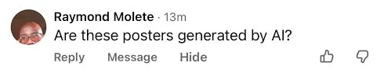

The Illusion of Understanding
How AI changes what it means to truly know a person.
"Lol." "Thats crazy." These simple responses are everywhere now. No matter what you say, whether it is something deep or something small, people have started defaulting to these kinds of replies. Think back to a time when you told somebody something and they actually listened, and gave you a real, meaningful response. You probably felt genuinely understood. That feeling is rare. And with AI becoming a bigger part of how we communicate, it might be getting even rarer.

In How to Know a Person, David Brooks makes the argument that truly knowing another person is one of the most important things you can do, and honestly most people are not that great at it. It takes patience, real curiosity, and actually paying attention. He wrote it for people who have felt invisible before, or who know deep down they are not really tuning in to the people around them.
This chapter picks up on something Brooks does not really touch on, which is AI. AI is everywhere now. People use it to write emails, figure out what to say, even respond to their friends. So the real question is, is AI actually helping us connect with people, or is it quietly making us worse at it?
The answer isn't that simple. AI is a useful tool, no doubt. But tools can turn into crutches real fast. The danger isn't that AI is going to replace human connection overnight. The danger is that people start settling for something that just looks like understanding, without actually putting in the work to understand.

People are already asking. They can feel it.
AI does not just answer questions anymore. It writes messages for you, summarizes what people said, and generates responses that sound caring and thoughtful. For millions of people, it has become a regular part of how they talk to others every day. And most of the time, nobody knows.

Its hard to talk about the elephant in the room.
Brooks reminds us that knowing a person isn't something you can rush. It takes time, effort, and a willingness to stay in uncomfortable conversations. AI is fast. Real understanding isn't. And the gap between those two things is exactly what this chapter is about.
"The most important thing you can do for another person is to make them feel seen."
I can see that dude.
Not literally. This isn't about making eye contact or being in the same room. Brooks is talking about something deeper, actually seeing someone on a conversational level. Knowing what they are going through, what they care about, what they are not saying out loud. Most people never get that from the people around them. And a lot of people never give it either.
Brooks draws a distinction between two kinds of people: illuminators and diminishers. An illuminator makes you feel truly seen, they ask good questions, they actually listen, and they treat you like a full person. A diminisher overlooks you, reduces you to a stereotype, or just does not pay attention. And most of the time, they do not even realize they are doing it.
Being an illuminator is a skill. You can get better at it. You can learn to ask more thoughtful questions, to sit with silence instead of filling it, and to actually pay attention. That practice, repeated over time, is what knowing a person looks like.
AI can copy a lot of the surface-level things that make communication feel good, polite language, supportive tone, emotional responses. But what Brooks is describing goes deeper. It isn't about saying the right thing. It is about being present, choosing to care even when it is hard. That isn't something you can generate.
AI Automation?
David J. Gunkel, a scholar who focuses on technology and communication, argues in AI for Communication (2025) that AI isn't just a tool we use to talk, it has become part of the conversation itself. From translation apps to chatbots to the autocomplete on your phone, AI is now shaping how messages are written and received every day. Gunkel's point is that this changes the nature of communication, not just the speed of it.
Communication researcher Leslie Ramos Salazar builds on this in AI-Mediated Communication (2026). Ramos Salazar explains that when AI helps write or shape your messages, it takes over some of the work you would normally do yourself, choosing the right words, reading the tone, thinking about how the other person might feel. That might sound helpful. But it also means less of you is in the message.
Eddie Chen, a computer science student, put it plainly in a conversation on April 24, 2026: "AI is really good at generating responses that sound right, but it doesn't actually understand what it's saying. As a CS student, I know it's just predicting patterns, not thinking or feeling."
That is the part that gets missed. When you get a response from an AI, or a message written with AI help, it can feel real. But what AI is actually doing is guessing the most likely next word based on patterns it has seen before. It isn't thinking about your situation. It isn't considering your relationship. It isn't feeling anything. And knowing a person, the way Brooks means it, requires all three.
Researcher Charles Duhigg calls people who do this well "super communicators." In a TED Talk on the science of conversation, Duhigg explains that what makes these people different isn't that they're more charismatic or outgoing. They've just learned one key skill: figuring out what kind of conversation they're actually in. Duhigg found that every conversation falls into one of three types, practical, emotional, or social, and that real connection only happens when both people are having the same one. A doctor who asks "what does this diagnosis mean to you?" instead of jumping straight to medical advice suddenly unlocks a completely different conversation. That one question changes everything.
AI skips all of that. It defaults to practical every single time. It doesn't ask what you need. It doesn't read the room. It just generates the most statistically likely response. And that gap, between a machine that optimizes for sounding right and a person who actually tries to understand what you need, is exactly what Brooks is asking us to protect.
Here is the tricky part. AI-assisted communication usually feels fine. The message gets sent. Things seem normal. Nothing obviously breaks. The problem builds slowly, in what people stop doing over time.
Janna Anderson, a researcher at the Pew Research Center, studied what hundreds of technology experts think AI will do to society by 2035. Anderson found that experts see real benefits coming, especially in health care, education, and science. But they also have serious concerns about what constant AI use will do to people's well-being and how communities function. This isn't just a personal worry. It is a collective one. The concern Brooks raises for individual relationships has a bigger version too, one that plays out across whole communities.
Every time someone slows down and thinks about what they want to say, they are practicing something that makes relationships and communities work better. Every time they skip that and let AI do it, they practice something else.
Human Connection
Slow, imperfect, and personal. Built through attention, vulnerability, and the effort of choosing words that actually mean something to the person you are talking to.
AI Interaction
Fast, polished, and pattern-based. Useful for tasks, but missing the lived experience, emotional weight, and real presence that knowing a person requires.
I've done it too.
I should be honest. I am a computer science student. I like AI. When a new tool comes out, my first reaction is usually excitement. I understand how it works, and I appreciate what it can do. But reading Brooks changed something.
There have been times I used AI to help phrase something I was struggling to say, to a professor, to a friend, in a situation that felt emotionally complicated. The message came out cleaner than anything I would have written myself. But the messy, searching version of me that had to think through the words was not in it. And that version, Brooks would say, is the one that actually connects.
As I wrote on April 24, 2026: "I use AI a lot because it's fast, but sometimes I feel like it replaces the effort I would normally put into explaining myself. It's easier, but it doesn't feel as real as actually talking to someone."
Jeanne W. Ross, writing in MIT Sloan Management Review, found that organizations that invest in AI but not in the people using it end up worse off. Ross argues that AI only works well when the humans around it stay sharp, questioning it, adjusting it, thinking critically. Her idea of an "AI-savvy" mindset isn't just about knowing how to use the tool. It is about knowing when not to.
The same applies outside of work. Using AI to help write a tough message can be fine. But if you use it to avoid figuring out what you actually mean, you are skipping the part that matters most.
There is one more problem that does not get talked about enough. AI systems are not neutral. Elif Kartal, a researcher who studies how AI systems are built and what goes wrong with them, published a study in the International Journal of Intelligent Information Technologies finding that bias gets baked into AI at multiple points, in the data it learns from, in the choices developers make, and in the social systems it operates in. AI can make existing unfairness worse, not better, even when it looks objective on the surface.
If an AI system has learned patterns that flatten certain people, making assumptions based on race, gender, accent, or background, then using that AI to communicate does not erase those assumptions. It hides them. People get misread, filtered out, or categorized by a system that has no idea who they actually are. That is the kind of not-seeing Brooks is warning against, scaled up and automated.
AI is already screening job applications, grading student writing, and influencing health care decisions. In all of those places, the question becomes bigger than any single conversation. Are you actually seeing this person? Or are you letting a pattern decide for you?
School is where a lot of this starts. Anderson's Pew report highlights education as one of the areas AI will change most. It can help when you are stuck, give quick feedback, make hard topics feel less overwhelming. That is genuinely useful. But learning is also about working through confusion on your own, making mistakes, building the habits you will carry into every conversation for the rest of your life. If AI does too much of that work, you finish the assignment but miss the point.
"The real question isn't whether AI can understand us. It is whether we will still try to understand each other."
AI isn't going away. It is going to keep getting better at writing, responding, and sounding human. A lot of that will be useful. But the skill Brooks is describing, sitting with another person, paying real attention, understanding them over time, does not improve on its own. The less you practice it, the worse you get.
Knowing how to build a powerful tool does not automatically make you a more thoughtful person. AI can help you communicate, but it cannot care about your relationships for you. It cannot do the uncomfortable work of figuring out what someone needs or saying something hard in the right way. That is still on you.
So the next time someone texts you something real, and your hand moves toward the AI button, ask yourself something. Is the response you are about to send actually from you? And if it isn't, what are you really saying?
References
Anderson, J. (2023). As AI spreads, experts predict the best and worst changes in digital life by 2035: They have deep concerns about people's and society's overall well-being. But they also expect great benefits in health care, scientific advances and education. Pew Research Center.
Brooks, D. (2023). How to know a person: The art of seeing others deeply and being deeply seen. Random House.
Chen, E. (2026, April 24). Personal communication.
Gunkel, D. J. (2025). AI for communication. CRC Press.
Kartal, E. (2022). A comprehensive study on bias in artificial intelligence systems: Biased or unbiased AI, that's the question! International Journal of Intelligent Information Technologies, 18(1), 1–23.
Ramos Salazar, L. (2026). AI-mediated communication. SAGE Publications.
Ross, J. W. (2018). The fundamental flaw in AI implementation. MIT Sloan Management Review, 59(2).